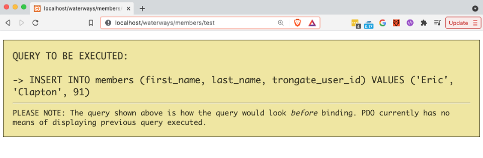

The Insert Method inserts a row of data into a database table. With this method, rows of new data are represented by a PHP array. This method accepts the following parameters:
WHEN A NEW ROW IS INSERTED
If the Method results in a new table row being inserted then the 'id' of the newly inserted record will be returned.
The syntax below shows the simplest Insert example possible. In this example, we create an array of data that represents a new table row. Then, we invoke 'Insert' and add a new row onto a database table, using the array that we have created.
$data["first_name"] = "Eric";
$data["last_name"] = "Clapton";
$data["trongate_user_id"] = 91;
$this->model->insert($data);
The code above will produce the following SQL query:
INSERT INTO tablename (first_name, last_name, trongate_user_id) VALUES ('Eric', 'Clapton', 91)
Below is an example of a Members.php controller file that contains a test() method. Here we're invoking a basic 'Insert' command and then immediately displaying the results using Trongate's json() method:
<?php
class Members extends Trongate {
function test() {
$data["first_name"] = "Eric";
$data["last_name"] = "Clapton";
$data["trongate_user_id"] = 91;
$this->model->insert($data);
}
Below shows an example of the kind of output that we can expect to see from the above method, when Debug Mode is switched on:

Below is a more advanced example. In this example, we have an alternative way of creating a data array and we also fetch then display the 'id' of the newly inserted table row:
function test() {
$data = array("first_name" => "Jimi",
"last_name" => "Hendrix",
"trongate_user_id" => 92);
$id = $this->model->insert($data, "members");
echo "The new record ID is: ".$id;
}
The code above would produce the following SQL query:
INSERT INTO members (first_name, last_name, trongate_user_id) VALUES ('Jimi', 'Hendrix', 92)